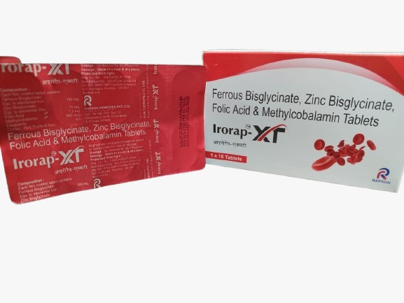

Drive Away Anaemia Dashingly... make Healthy Mother.
A highly efficient iron salt that significantly increases Hb levels with superior absorption.
Essential B-vitamins for DNA synthesis and the healthy production of red blood cells.
Irorap-XT provides a comprehensive approach to hemogenesis. The Ferrous Bisglycinate salt is totally absorbed by the body, ensuring a direct increase in Hemoglobin (Hb) levels without the common side effect of iron overload.
Features reducing properties that ensure more absorption compared to ferrous sulphate or carbonyl iron.
Formulated to be totally absorbed, preventing excess iron from lingering in the system.
Clinical data shows it is a highly efficient salt for significantly increasing Hb levels.
The ideal therapy for maintaining iron balance during: